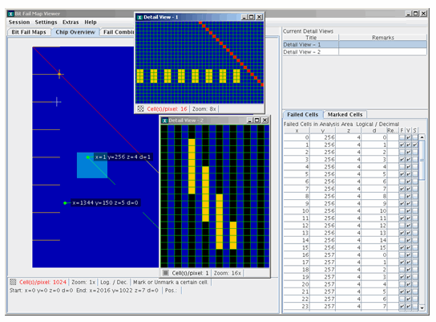

Bit Fail Map Viewer
The Bit Fail Map Viewer (often simply called BFM Viewer) is a tool that shows the errors occurring when a memory device is tested in a graphical way representative of the actual memory layout of the device.
This means that you can quickly see the locations on the DUT of failing cells, for example, failures in a row or a whole block.
Important features of the BFM Viewer:
- You can zoom in on limited areas of the core and show a detailed list with failing information.
- Failed memory cells can be individually marked and displayed in a detailed view.
- You can zoom in to and out of detailed views as well as pan them.
- Cell addresses can be displayed as logical, physical, or topological values.
- Up to seven layers (with one or more BFMs each) can be loaded to be viewed simultaneously. Different colors are used to indicate combinations of failures in multiple layers.
- Filters can be defined containing rules that show or hide cells in the bitmap view.
The image below shows some of the main functions of the BFM Viewer: two detail views, an analysis area, a marked cell within the analysis area, a non-failing marked cell in the overview window, and the detailed list of failed cells. A filter is defined which excludes all odd data pins.

License
The BFM Viewer requires a floating FlexLM license provided by a license server. Starting the BFM Viewer pulls a license and ending it releases the license. If the FLEXlm license server cannot provide a license, the BFM Viewer will not start. For further details on FLEXlm licensing see Installing your FLEXlm licensein the CTH Installation Guide.
Functional changes
- Introduced before SmarTest 6.3.2